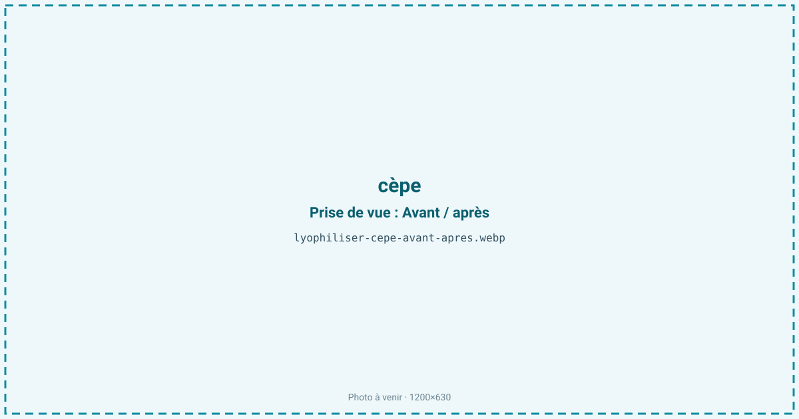
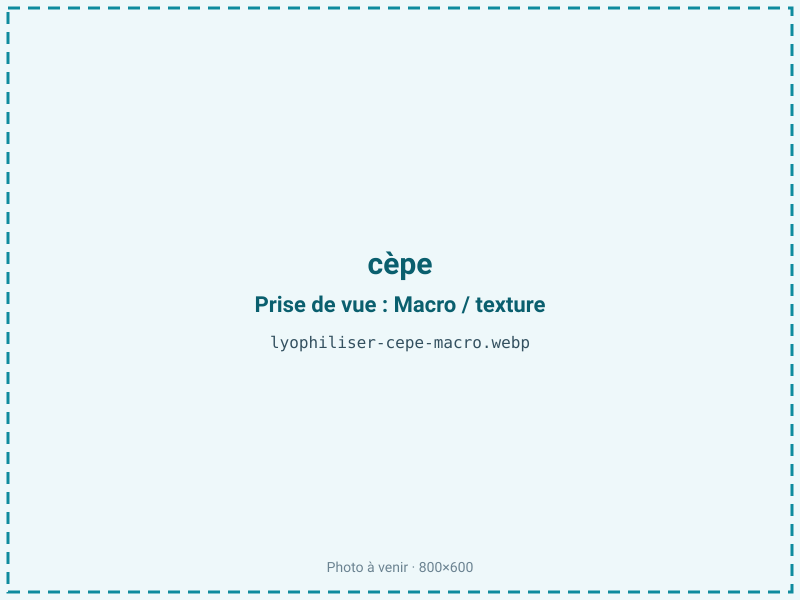
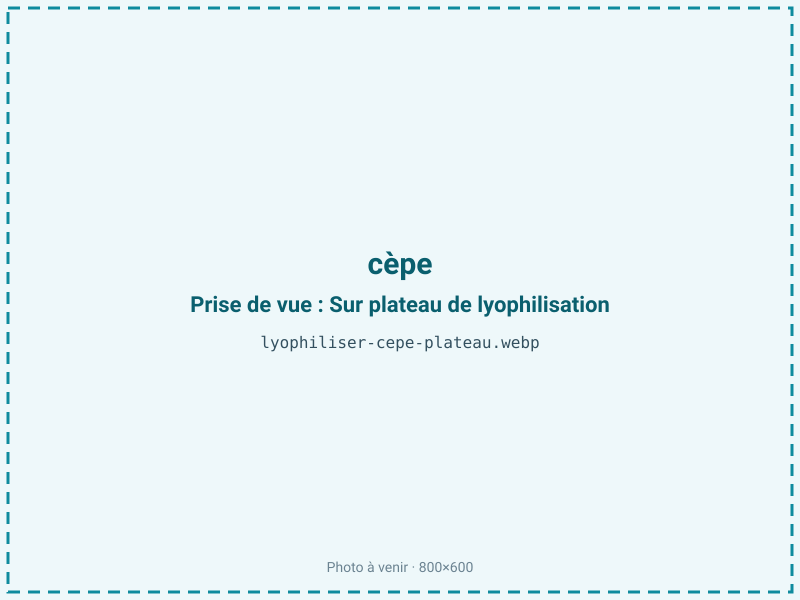
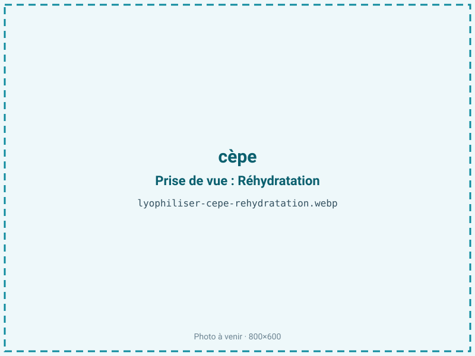

Lyophiliser des cèpes
Le cèpe frais se garde à peine quelques jours et se pique de vers ou se gorge d'eau en 48 heures. La lyophilisation fige son arôme boisé et son umami dès la récolte, en produit sec, léger et réhydratable, sans la note torréfiée que laisse le séchage à chaud.

En bref
Comment cèpe se comporte à la lyophilisation
Le cèpe titre environ 88 % d'eau, répartie inégalement entre un pied ferme et charnu et une couche de tubes spongieuse sous le chapeau — le fameux « foin » — qui se gorge d'eau comme une éponge. Ses parois cellulaires sont faites de chitine, plus résistante que la cellulose des végétaux, ce qui aide la structure à tenir pendant le séchage. Le champignon contient naturellement du tréhalose, un sucre qui joue le rôle de cryoprotecteur et limite les dégâts des cristaux de glace.
L'arôme repose sur des composés très volatils, dont le 1-octène-3-ol (odeur de sous-bois), tandis que l'umami vient du glutamate libre et du guanylate. À la congélation, l'eau cristallise dans les hyphes ; à la sublimation, le front progresse facilement dans le pied mais plus lentement dans la couche de tubes, qui reste le dernier point humide. C'est cette hétérogénéité pied/tubes qu'il faut gérer : beaucoup d'ateliers retirent l'hyménium le plus spongieux avant traitement pour homogénéiser le séchage.
Paramètres de cycle
Trier et brosser à sec plutôt que laver : le cèpe boit l'eau et rallongerait le cycle tout en délavant l'arôme. Trancher en lamelles régulières de 4 à 6 mm dans le sens de la hauteur, pied et chapeau solidaires, pour un séchage homogène. Congeler à −30 °C, ce qui a l'avantage de tuer les larves éventuelles.
En sublimation primaire, une clayette de 20 à 25 °C suffit, la chitine tolérant bien la montée en température. Le cèpe étant un produit maigre (moins de 2 % de lipides), on peut viser une aw basse de 0,20 à 0,30 : ici, descendre bas est favorable à la stabilité, sans le risque de rancissement des produits gras. Le critère d'arrêt combine une aw inférieure ou égale à 0,30 et une lamelle qui casse net, sans zone souple au niveau des tubes, souvent le dernier point à sécher.
Pièges connus
- Vérifier l'absence de vers avant traitement.
- Arôme volatil : conditionner à l'abri de l'air.



Variantes & provenance
Le calibre et la maturité pèsent lourd : un jeune cèpe « bouchon » à tubes blancs et fermes donne un produit plus net qu'un vieux sujet aux tubes verdâtres et ramollis, plus difficile à sécher et moins joli en poudre. L'espèce compte aussi — Boletus edulis, pinophilus ou aereus n'ont pas la même densité ni le même parfum. La saison joue : les cèpes d'automne après pluie sont plus gorgés d'eau que ceux d'été, d'où un cycle allongé et un ratio moins favorable. Selon le débouché, on traite en lamelles (pour la réhydratation et le visuel) ou on broie en poudre après séchage (pour les bouillons et assaisonnements). La provenance sauvage impose un contrôle systématique des vers, absent des cèpes de culture.
Conservation & DLUO
Le facteur limitant du cèpe n'est pas l'oxydation des graisses — il en contient moins de 2 % — mais la reprise d'humidité et la fuite des arômes volatils. Une aw basse lui est donc favorable, sans le risque de rancissement propre aux produits gras : on peut sécher franchement.
Le point sensible est le 1-octène-3-ol et les autres composés de sous-bois, qui s'échappent à l'air libre : il faut conditionner vite après séchage, en sachet barrière, de préférence opaque. En sachet barrière hermétique, le cèpe se conserve 12 à 24 mois à température ambiante. Un cèpe lyophilisé qui a repris l'humidité redevient souple, perd son croquant et voit son arôme s'affadir ; l'ajout d'un absorbeur d'humidité et un stockage au sec sont les meilleures garanties de tenue.
12 à 24 mois en sachet barrière.
Estimez selon votre emballage :
Face aux autres procédés de séchage
Le cèpe séché à l'air chaud est un produit classique et apprécié, mais c'est un autre produit : la chaleur déclenche des réactions de Maillard qui créent des notes torréfiées et « bouillon » absentes du champignon frais. La lyophilisation, elle, fige le profil du cèpe cru — notes de sous-bois, fraîcheur — et donne une réhydratation qui restitue davantage la texture charnue. Le micro-ondes sous vide sèche vite et coûte moins cher, ce qui convient à une poudre de volume, mais le front chaud emporte une partie des composés volatils les plus fins. Pour un cèpe premium destiné à la gastronomie, où l'arôme est tout, le froid reste la référence.
Marchés & applications
La poudre de cèpe alimente les fonds, bouillons et sauces premium, les risottos et les mélanges d'assaisonnement de chef. Les lamelles réhydratables visent la cuisine instantanée haut de gamme, les plats préparés et les kits gastronomiques. Les clients types sont les épiceries fines, les marques de bouillons et fonds concentrés, les fabricants de plats lyophilisés de randonnée à valeur ajoutée, et les restaurateurs qui veulent un cèpe disponible hors saison, à l'arôme stable et au dosage régulier.
- Poudre aromatique de chef
- Bouillons premium
- Risottos
Questions fréquentes — cèpe
Le cèpe lyophilisé se réhydrate-t-il comme un cèpe frais ?
En grande partie : les lamelles regonflent en quelques minutes dans un liquide chaud et retrouvent du moelleux, mieux qu'un cèpe séché à l'air, même si la texture reste un cran en dessous du frais.
Faut-il laver les cèpes avant de les lyophiliser ?
Non, il vaut mieux les brosser à sec : le cèpe est très absorbant et l'eau de lavage rallonge le cycle tout en délavant l'arôme.
La congélation tue-t-elle les vers ?
Oui : le passage à −30 °C avant sublimation détruit les larves éventuelles. Un contrôle visuel reste indispensable sur les cèpes sauvages.
Cèpe lyophilisé ou cèpe séché : lequel a le plus de goût ?
Les deux sont intenses mais différents : le séché développe des notes torréfiées de Maillard, le lyophilisé garde le profil frais de sous-bois. Le choix dépend de l'usage.
Quel est le ratio du cèpe lyophilisé ?
Environ 9:1 : il faut à peu près 900 g de cèpes frais pour 100 g de produit sec, le champignon étant riche en eau.
Faut-il retirer les tubes (le foin) sous le chapeau ?
Sur les sujets âgés, oui : la couche spongieuse retient l'eau et sèche plus lentement que le reste. Sur un jeune cèpe ferme, ce n'est pas nécessaire.
La poudre de cèpe se conserve-t-elle bien ?
Oui, 12 à 24 mois en sachet barrière opaque au sec. Comme les arômes sont volatils, il faut refermer vite et éviter l'exposition à l'air.
Prochaine étape : envoyez-nous 200 g
Vous avez les repères du cèpe. La suite logique : nous envoyer un échantillon et repartir avec une fiche technique sur votre produit — rendement, aw finale, coût au kilo.
Tester du cèpe — 250 à 500 €Déductible de votre premier lot.